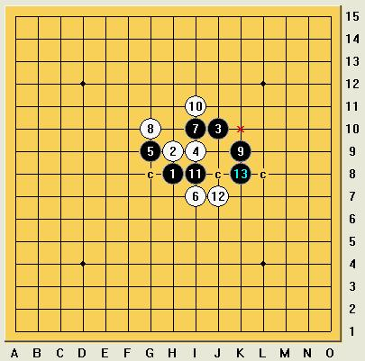
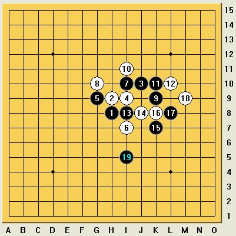
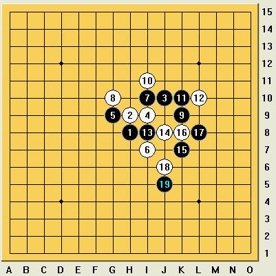

[学术讨论] 传统疏8的终结！（讨论）
#1 [学术讨论] 传统疏8的终结！（讨论） 作者：五子痴 发表时间：2008-10-3 18:37:13
=======上图对应的爱五子棋谱代码如下，以便你拆解：========
h8h9j10i9g9i7i10g10
======================================================
这个8手过去是再平常不过的变化了！大家过去都不少下吧 但后来被冷落了 都说被终结了 本人不知道如何搞定这个变化 但我希望和大家一起来探讨 提高！也算是对历史的回顾 感慨一个变化从流行 到没落 到没人下的地步 让我们一起动脑去寻找它的答案吧！（希望大家都能拿出开发神8神9神10的精神来 嘎嘎）
［ 茗弈小刀 于 2008-12-21 11:34:23 时奖励此帖[金币加 20 威望加1］
［此帖子已被 茗弈小刀 在 2009-4-22 20:22:18 编辑过］
［ 茗弈总监 于 2011-6-22 7:57:57 时花20金币送鲜花一朵］
［ 安娜制作所 于 2011-6-22 7:58:35 时花20金币送鲜花一朵］
#2 Re:传统疏8的终结！（讨论） 作者：五子痴 发表时间：2008-10-3 18:39:49
！
=======上图对应的爱五子棋谱代码如下，以便你拆解：========
h8h9j10i9g9i7i10g10k9
======================================================
这里首先我感觉应该从这个9手做起！过去很多9手都出现过 但是自从这个9出现以后 这个8就逐渐的没落了 所以这个可能是突破口！[
［ 茗弈小刀 于 2008-10-3 19:31:04 时奖励此帖[金币加 20 威望加1］
#3 Re:传统疏8的终结！（讨论） 作者：五子痴 发表时间：2008-10-3 18:48:20
=======上图对应的爱五子棋谱代码如下，以便你拆解：========
h8h9j10i9g9i7i10g10k9i11
======================================================
这个10比较强！也许只有这个10白还可以下 如果把这个10搞定 我想这个局面被终结就不是难事了！
#4 Re:传统疏8的终结！（讨论） 作者：五子痴 发表时间：2008-10-3 18:51:58
=======上图对应的爱五子棋谱代码如下，以便你拆解：========
h8h9j10i9g9i7i10g10k9i11i8j8k10l10h7j9i6
======================================================
对于这个10我提供一种变化 12（甲）也许还有别的防点 但是这个要是被解决 其他可能也不会比这个难 13到17 白都是唯一！17之后会怎么样呢？个人感觉 终结还是比较有眉目的 大家可以多提提意见 一起参与近来
#5 Re:传统疏8的终结！（讨论） 作者：五子痴 发表时间：2008-10-3 19:08:34
=======上图对应的爱五子棋谱代码如下，以便你拆解：========
h8h9j10i9g9i7i10g10k9i11i8k8f8g8k10l10e7d6e9g7f9f10c9d9d10
======================================================
换成这个12（乙） 是否可以这么终结呢？大家多发表意见撒！
#6 Re:传统疏8的终结！（讨论） 作者：五子痴 发表时间：2008-10-3 19:17:29
=======上图对应的爱五子棋谱代码如下，以便你拆解：========
h8h9j10i9g9i7i10g10k9i11i8j7h7
======================================================
对于这个12（丙） 提供这个13！有希望终结
#7 Re:传统疏8的终结！（讨论） 作者：五子痴 发表时间：2008-10-3 19:25:21
=======上图对应的爱五子棋谱代码如下，以便你拆解：========
h8h9j10i9g9i7i10g10k9i11i8k10j8k8f5
======================================================
12（丁）能否这么终结呢？ 以上是对于这个11的主要4个12 手（其他12感觉很简单就能杀掉） 个人感觉 都有终结的可能 你说呢 呵呵
#8 Re:传统疏8的终结！（讨论） 作者：潇洒 发表时间：2008-10-3 19:57:13
5楼 21 直接 23 就必胜了#9 Re:传统疏8的终结！（讨论） 作者：罗马王子 发表时间：2008-10-3 22:08:43
这个8我现在走得比较少，需要研究一下。呵呵。#10 Re:Re:传统疏8的终结！（讨论） 作者：闫荣辉 发表时间：2008-10-3 23:38:24
抄下来！待会儿研究研究！
#11 Re:传统疏8的终结！（讨论）终结了其中一个12 作者：兔子哥哥 发表时间：2008-10-4 0:04:37
 疏星1打的必败12终结棋谱.rar
疏星1打的必败12终结棋谱.rar
［ 茗弈小刀 于 2008-10-4 14:59:07 时奖励此帖[金币加 20 威望加1］
［ 棋元道 于 2011-10-15 23:38:59 时花20金币送鲜花一朵］
#12 Re:传统疏8的终结！（讨论） 作者：卖身打胎 发表时间：2008-10-4 10:17:50
=======上图对应的爱五子棋谱代码如下，以便你拆解：========
h8h9j10i9g9i7i10g10k9k10i8j8k7l8f8e8h11g12g6
======================================================
我只是把这之后给杀了
#13 Re:传统疏8的终结！（讨论） 作者：五子痴 发表时间：2008-10-4 11:06:29
很高兴能和大家一起来探索五子棋的奥妙！兔子哥哥终结了一个12
现在难就难在12（甲）的终结！如图 17以前都是唯一 18应该也是唯一 黑19之后 白20主要有A点图和B点图两个变化
其他点应该不难搞定！这个12（甲）也许是这个8手的最后生命线了 大家一起努力吧！
A点图
=======上图对应的爱五子棋谱代码如下，以便你拆解：========
h8h9j10i9g9i7i10g10k9i11i8j8k10l10h7j9i6k7l6f11
======================================================
B点图
=======上图对应的爱五子棋谱代码如下，以便你拆解：========
h8h9j10i9g9i7i10g10k9i11i8j8k10l10h7j9i6k7l6h11
======================================================
［ 茗弈小刀 于 2008-10-4 15:06:30 时奖励此帖[金币加 20 威望加1］
#14 Re:传统疏8的终结！（讨论） 作者：五子痴 发表时间：2008-10-4 11:56:58
12（甲）白20 A点之后 21必防 如果22在H5 23可以在F8直接进攻！如下图
=======上图对应的爱五子棋谱代码如下，以便你拆解：========
h8h9j10i9g9i7i10g10k9i11i8j8k10l10h7j9i6k7l6f11g11h5f8
======================================================
如果22在K5 最好的进攻方法 也许是G6 如下图
=======上图对应的爱五子棋谱代码如下，以便你拆解：========
h8h9j10i9g9i7i10g10k9i11i8j8k10l10h7j9i6k7l6f11g11j5g6
======================================================
上面的两种变化都有终结的可能！
#15 Re:传统疏8的终结！（讨论） 作者：逆刃 发表时间：2008-10-4 12:33:46
除了12（甲），其余的我已经终结了，等12（甲）和其它10都终结了，谱可以共享。#16 Re:传统疏8的终结！（讨论） 作者：游戏人间 发表时间：2008-10-4 13:42:53
其他10.........我那么多年都没搞定其他10.不过实战没得下。黑变招进攻太多。
#17 Re:传统疏8的终结！（讨论） 作者：游戏人间 发表时间：2008-10-4 13:44:53
=======上图对应的爱五子棋谱代码如下，以便你拆解：========
h8h9j10i9g9i7i10g10k9h10
======================================================
随便来个白10我没杀掉呢
#18 Re:传统疏8的终结！（讨论） 作者：游戏人间 发表时间：2008-10-4 13:46:19
=======上图对应的爱五子棋谱代码如下，以便你拆解：========
h8h9j10i9g9i7i10g10k9k10
======================================================
这个呢
#19 Re:传统疏8的终结！（讨论） 作者：茗弈小刀 发表时间：2008-10-4 15:01:45
嘎嘎。这个8连偶大鱼师傅都惊动了呢！感谢兔子哥哥的谱，逆刃大哥的谱期待中。。。。。。#20 Re:Re:传统疏8的终结！（讨论）终结了其中一个12 作者：五子痴 发表时间：2008-10-4 15:08:41
对于10在H10提供这个11走法参考 12几乎唯一了好象 13能否杀 大家研究下
=======上图对应的爱五子棋谱代码如下，以便你拆解：========
h8h9j10i9g9i7i10g10k9h10k8l8j8
======================================================
10在K10是下期研究目标 楼上打胎老兄已经提供了解决10在K10的雏形 先把眼前搞定嘿
#21 Re:传统疏8的终结！（讨论） 作者：五子痴 发表时间：2008-10-4 16:21:38
经过大家的努力 还差一个12未搞定！整理成棋谱
［ 茗弈小刀 于 2008-10-4 16:26:49 时奖励此帖[金币加 20 威望加1］
#22 Re:Re:传统疏8的终结！（讨论） 作者：兔子哥哥 发表时间：2008-10-5 1:00:57
大家看看这样走黑怎么样？#23 Re:传统疏8的终结！（讨论） 作者：五子痴 发表时间：2008-10-6 15:33:16
这个防中间很强的 后面黑好象没具备杀棋的足够优势=======上图对应的爱五子棋谱代码如下，以便你拆解：========
h8h9j10i9g9i7i10g10k9i11i8j8k10l10k7k8l8m9i5j6
======================================================
#24 Re:传统疏8的终结！（讨论） 作者：五子痴 发表时间：2008-10-6 15:41:55
这是另一路有希望终结这个12的变化 感谢逆刃和吉坦的支持！我们一起研究了这个变化 19之后优势满大的 也许扩展为胜势只是时间问题了 12甲.rar
=======上图对应的爱五子棋谱代码如下，以便你拆解：========
h8h9j10i9g9i7i10g10k9i11i8j8k10l10k11k8l11m12k7
======================================================
［ 茗弈小刀 于 2008-10-9 14:19:00 时奖励此帖[金币加 20 威望加1］
#25 Re:传统疏8的终结！（讨论） 作者：高星 发表时间：2008-10-9 8:50:23
 虽然没仔细研究过 但是觉得还是有道理哈 厉害厉害
虽然没仔细研究过 但是觉得还是有道理哈 厉害厉害 终结谱出来了记的传上来哈
终结谱出来了记的传上来哈
#26 Re:传统疏8的终结！（讨论） 作者：五子痴 发表时间：2008-10-11 14:08:37
=======上图对应的爱五子棋谱代码如下，以便你拆解：========
h8h9j10i9g9i7i10g10k9h10k8l8i8
======================================================
这个13偶发明的哈 并终结了 现将终结谱奉上
又一重要分支终结！.rar［ 茗弈小刀 于 2008-10-11 15:44:59 时奖励此帖[金币加 20 威望加1］
#27 Re:传统疏8的终结！（讨论） 作者：五子痴 发表时间：2008-10-27 12:00:56
对于上面这个10手 有人提出了12在I8 之后的变化好象无法终结 这个12咋一看黑好象很容易就可以取胜 其实不然 如果照简单的思路走的话 黑确实杀不了！
在这里提供下我研究出来的变化 个人感觉好象黑必胜了！大家看看
=======上图对应的爱五子棋谱代码如下，以便你拆解：========
h8h9j10i9g9i7i10g10k9h10k8i8j7k10i6l9j6j9h7h6l8m7m8n8f9j5e10g8f11
======================================================
28和以前的白都是唯一防！29黑必胜型 白在下面或者右边的进攻也阻止不了黑取得胜利！
#28 Re:[学术讨论] 传统疏8的终结！（讨论） 作者：砍 发表时间：2011-6-22 0:44:12
其实我到现在也不知道这个怎么地毯#29 Re:[学术讨论] 传统疏8的终结！（讨论） 作者：厦门小天 发表时间：2011-6-22 1:49:24
=======上图对应的爱五子棋谱代码如下，以便你拆解：========
h8h9j10i9g9i7i10g10k9i11i8j8
======================================================
这个变化，记得空恨论坛那时候，这个12已经唯一了。后来有人说这个12也杀了，好奇~~
#30 Re:[学术讨论] 传统疏8的终结！（讨论） 作者：自来水 发表时间：2011-6-22 6:57:11
- -埋了三年的东西
#31 Re:[学术讨论] 传统疏8的终结！（讨论） 作者：萧何 发表时间：2011-6-22 9:37:51
最近流行掘墓#32 Re:Re:传统疏8的终结！（讨论） 作者：死劲哭 发表时间：2011-6-28 18:04:35
引用：
原文由 五子痴 发表于 2008-10-3 18:48:20 :
=======上图对应的爱五子棋谱代码如下，以便你拆解：========
h8h9j10i9g9i7i10g10k9i11
======================================================这个10比较强！也许只有这个10白还可以下 如果把这个10搞定 我想这个局面被终结就不是难事了！
老师，我没有找关于下面这个10的结论，方便的时候，方面的时候您能给予些提示吗？谢谢您了！
=======上图对应的爱五子棋谱代码如下，以便你拆解：========
h8h9j10i9g9i7i10g10k9k10
======================================================